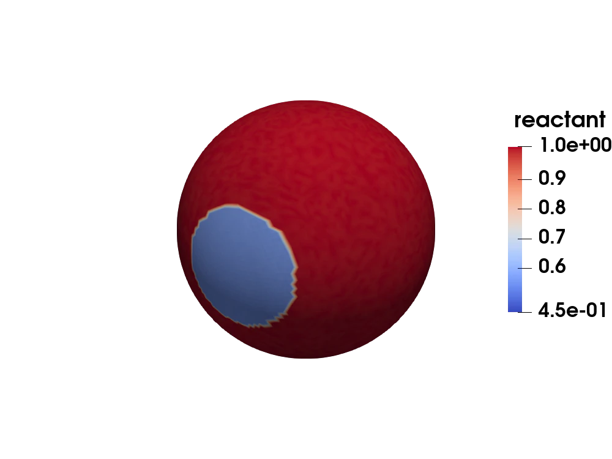
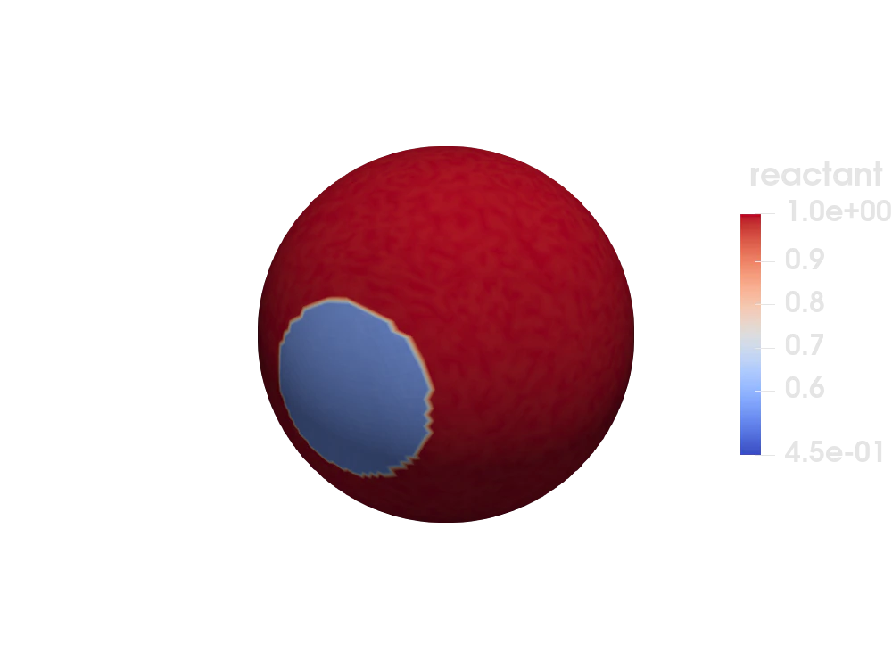

Reactive surface


Figure 1: Reactant concentration field of the Gray-Scott model on the unit sphere.
This example is also available as a Jupyter notebook: reactive_surface.ipynb.
Introduction
This tutorial gives a quick tutorial on how to assemble and solve time-dependent problems on embedded surfaces.
For this showcase we use the well known Gray-Scott model, which is a well-known reaction-diffusion system to study pattern formation. The strong form is given by
\[ \begin{aligned} \partial_t r_1 &= \nabla \cdot (D_1 \nabla r_1) - r_1*r_2^2 + F *(1 - r_1) \quad \textbf{x} \in \Omega, \\ \partial_t r_2 &= \nabla \cdot (D_2 \nabla r_2) + r_1*r_2^2 - r_2*(F + k ) \quad \textbf{x} \in \Omega, \end{aligned}\]
where $r_1$ and $r_2$ are the reaction fields, $D_1$ and $D_2$ the diffusion tensors, $k$ is the conversion rate, $F$ is the feed rate and $\Omega$ the domain. Depending on the choice of parameters a different pattern can be observed. Please also note that the domain does not have a boundary. The corresponding weak form can be derived as usual.
For simplicity we will solve the problem with the Lie-Troter-Godunov operator splitting technique with the classical reaction-diffusion split. In this method we split our problem in two problems, i.e. a heat problem and a pointwise reaction problem, and solve them alternatingly to advance in time.
Solver details
The main idea for the Lie-Trotter-Godunov scheme is simple. We can write down the reaction diffusion problem in an abstract way as
\[ \partial_t \mathbf{r} = \mathcal{D}\mathbf{r} + R(\mathbf{r}) \quad \textbf{x} \in \Omega\]
where $\mathcal{D}$ is the diffusion operator and $R$ is the reaction operator. Notice that the right hand side is just the sum of two operators. Now with our operator splitting scheme we can advance a solution $\mathbf{r}(t_1)$ to $\mathbf{r}(t_2)$ by first solving a heat problem
\[ \partial_t \mathbf{r}^{\mathrm{\mathrm{A}}} = \mathcal{D}\mathbf{r}^{\mathrm{A}} \quad \textbf{x} \in \Omega\]
with $\mathbf{r}^{\mathrm{A}}(t_1) = \mathbf{r}(t_1)$ on the time interval $t_1$ to $t_2$ and use the solution as the initial condition to solve the reaction problem
\[ \partial_t \mathbf{r}^{\mathrm{B}} = R(\mathbf{r}^{\mathrm{B}}) \quad \textbf{x} \in \Omega\]
with $\mathbf{r}^{\mathrm{B}}(t_1) = \mathbf{r}^{\mathrm{A}}(t_2)$. This way we obtain a solution approximation $\mathbf{r}(t_2) \approx \mathbf{r}^{\mathrm{B}}(t_2)$.
The operator splitting itself is an approximation, so even if we solve the subproblems analytically we end up with having only a solution approximation. We also do not have a beginner friendly reference for the theory behind operator splitting and can only refer to the original papers for each method.
Commented program
Now we solve the problem in Ferrite. What follows is a program spliced with comments. The full program, without comments, can be found in the next section.
First we load Ferrite, and some other packages we need
using Ferrite, FerriteGmshusing BlockArrays, SparseArrays, LinearAlgebra, VTKHDFAssembly routines
Before we head into the assembly, we define a helper struct to control the dispatches.
struct GrayScottMaterial{T} D₁::T D₂::T F::T k::Tend;The following assembly routines are written analogue to these found in previous tutorials.
function assemble_element_mass!(Me::Matrix, cellvalues::CellValues) n_basefuncs = getnbasefunctions(cellvalues) # The mass matrices between the reactions are not coupled, so we get a blocked-strided matrix. num_reactants = 2 r₁range = 1:num_reactants:(num_reactants * n_basefuncs) r₂range = 2:num_reactants:(num_reactants * n_basefuncs) Me₁ = @view Me[r₁range, r₁range] Me₂ = @view Me[r₂range, r₂range] # Loop over quadrature points for q_point in 1:getnquadpoints(cellvalues) # Get the quadrature weight dΩ = getdetJdV(cellvalues, q_point) # Loop over test shape functions for i in 1:n_basefuncs δuᵢ = shape_value(cellvalues, q_point, i) # Loop over trial shape functions for j in 1:n_basefuncs δuⱼ = shape_value(cellvalues, q_point, j) # Add contribution to Ke Me₁[i, j] += (δuᵢ * δuⱼ) * dΩ Me₂[i, j] += (δuᵢ * δuⱼ) * dΩ end end end return nothingendfunction assemble_element_diffusion!(De::Matrix, cellvalues::CellValues, material::GrayScottMaterial) n_basefuncs = getnbasefunctions(cellvalues) D₁ = material.D₁ D₂ = material.D₂ # The diffusion between the reactions is not coupled, so we get a blocked-strided matrix. num_reactants = 2 r₁range = 1:num_reactants:(num_reactants * n_basefuncs) r₂range = 2:num_reactants:(num_reactants * n_basefuncs) De₁ = @view De[r₁range, r₁range] De₂ = @view De[r₂range, r₂range] # Loop over quadrature points for q_point in 1:getnquadpoints(cellvalues) # Get the quadrature weight dΩ = getdetJdV(cellvalues, q_point) # Loop over test shape functions for i in 1:n_basefuncs ∇δuᵢ = shape_gradient(cellvalues, q_point, i) # Loop over trial shape functions for j in 1:n_basefuncs ∇δuⱼ = shape_gradient(cellvalues, q_point, j) # Add contribution to Ke De₁[i, j] += D₁ * (∇δuᵢ ⋅ ∇δuⱼ) * dΩ De₂[i, j] += D₂ * (∇δuᵢ ⋅ ∇δuⱼ) * dΩ end end end return nothingendfunction assemble_matrices!(M::SparseMatrixCSC, D::SparseMatrixCSC, cellvalues::CellValues, dh::DofHandler, material::GrayScottMaterial) n_basefuncs = getnbasefunctions(cellvalues) # Allocate the element stiffness matrix and element force vector Me = zeros(2 * n_basefuncs, 2 * n_basefuncs) De = zeros(2 * n_basefuncs, 2 * n_basefuncs) # Create an assembler M_assembler = start_assemble(M) D_assembler = start_assemble(D) # Loop over all cells for cell in CellIterator(dh) # Reinitialize cellvalues for this cell reinit!(cellvalues, cell) fill!(Me, 0) fill!(De, 0) # Compute element contribution assemble_element_mass!(Me, cellvalues) assemble!(M_assembler, celldofs(cell), Me) assemble_element_diffusion!(De, cellvalues, material) assemble!(D_assembler, celldofs(cell), De) end return nothingend;Initial condition setup
Time-dependent problems always need an initial condition from which the time evolution starts. In this tutorial we set the concentration of reactant 1 to $1$ and the concentration of reactant 2 to $0$ for all nodal dof with associated coordinate $z \leq 0.9$ on the sphere. Since the simulation would be pretty boring with a steady-state initial condition, we introduce some heterogeneity by setting the dofs associated to top part of the sphere (i.e. dofs with $z > 0.9$ to store the reactant concentrations of $0.5$ and $0.25$ for the reactants 1 and 2 respectively.
function setup_initial_conditions!(u₀::Vector, cellvalues::CellValues, dh::DofHandler) u₀ .= ones(ndofs(dh)) u₀[2:2:end] .= 0.0 n_basefuncs = getnbasefunctions(cellvalues) for cell in CellIterator(dh) reinit!(cellvalues, cell) coords = getcoordinates(cell) dofs = celldofs(cell) uₑ = @view u₀[dofs] rv₀ₑ = reshape(uₑ, (2, n_basefuncs)) for i in 1:n_basefuncs if coords[i][3] > 0.9 rv₀ₑ[1, i] = 0.5 rv₀ₑ[2, i] = 0.25 end end end u₀ .+= 0.01 * rand(ndofs(dh)) returnend;Mesh generation
In this section we define a routine to create a surface mesh with the help of FerriteGmsh.jl.
function create_embedded_sphere(refinements) gmsh.initialize() # Add a unit sphere in 3D space gmsh.model.occ.addSphere(0.0, 0.0, 0.0, 1.0) gmsh.model.occ.synchronize() # Generate nodes and surface elements only, hence we need to pass 2 into generate gmsh.model.mesh.generate(2) # To get good solution quality refine the elements several times for _ in 1:refinements gmsh.model.mesh.refine() end # Now we create a Ferrite grid out of it. Note that we also call toelements # with our surface element dimension to obtain these. nodes = tonodes() elements, _ = toelements(2) gmsh.finalize() return Grid(elements, nodes)endcreate_embedded_sphere (generic function with 1 method)Simulation routines
Now we define a function to setup and solve the problem with given feed and conversion rates $F$ and $k$, as well as the time step length and for how long we want to solve the model.
function gray_scott_on_sphere(material::GrayScottMaterial, Δt::Real, T::Real, refinements::Integer) # We start by setting up grid, dof handler and the matrices for the heat problem. grid = create_embedded_sphere(refinements) # Next we are creating our element assembly helper for surface elements. # The only change which we need to introduce here is to pass in a geometrical # interpolation with the same dimension as the physical space into which our # elements are embedded into, which is in this example 3. ip = Lagrange{RefTriangle, 1}() qr = QuadratureRule{RefTriangle}(2) cellvalues = CellValues(qr, ip, ip^3) # We have two options to add the reactants to the dof handler, which will give us slightly # different resulting dof distributions: # A) We can add a scalar-valued interpolation for each reactant. # B) We can add one vectorized interpolation whose dimension is the number of reactants. # In this tutorial we opt for B, because the dofs are distributed per cell entity -- or # to be specific for this tutorial, we use an isoparametric concept such that the nodes # of our grid and the nodes of our solution approximation coincide. This way we can # simply reshape the solution vector u into a matrix where the inner index # corresponds to the index of the reactant. Note that we will still use the scalar # interpolation for the assembly procedure. dh = DofHandler(grid) add!(dh, :reactants, ip^2) close!(dh) # We can save some memory by telling the sparsity pattern that the matrices are not coupled. M = allocate_matrix(dh; coupling = [true false; false true]) D = allocate_matrix(dh; coupling = [true false; false true]) # Since the heat problem is linear and has no time dependent parameters, we precompute the # decomposition of the system matrix to speed up the linear system solver. assemble_matrices!(M, D, cellvalues, dh, material) A = M + Δt .* D cholA = cholesky(A) # Now we setup buffers for the time dependent solution and fill the initial condition. uₜ = zeros(ndofs(dh)) uₜ₋₁ = ones(ndofs(dh)) setup_initial_conditions!(uₜ₋₁, cellvalues, dh) # And prepare output for visualization. The whole time series is stored in # a single temporal VTKHDF file, with the grid written only once. vtkhdf = VTKHDFGridFile("reactive-surface.vtkhdf", dh; temporal = true) write_timestep(vtkhdf, 0.0) do vtk write_solution(vtk, dh, uₜ₋₁) end # This is now the main solve loop. F = material.F k = material.k for (iₜ, t) in enumerate(Δt:Δt:T) # First we solve the heat problem uₜ .= cholA \ (M * uₜ₋₁) # Then we solve the point-wise reaction problem with the solution of # the heat problem as initial guess. 2 is the number of reactants. num_individual_reaction_dofs = ndofs(dh) ÷ 2 rvₜ = reshape(uₜ, (2, num_individual_reaction_dofs)) for i in 1:num_individual_reaction_dofs r₁ = rvₜ[1, i] r₂ = rvₜ[2, i] rvₜ[1, i] += Δt * (-r₁ * r₂^2 + F * (1 - r₁)) rvₜ[2, i] += Δt * (r₁ * r₂^2 - r₂ * (F + k)) end # The solution is then stored every 10th step to the VTKHDF file for # later visualization purposes. if (iₜ % 10) == 0 write_timestep(vtkhdf, t) do vtk write_solution(vtk, dh, uₜ) end end # Finally we rotate the solution to initialize the next timestep. uₜ₋₁ .= uₜ end close(vtkhdf) returnend# This parametrization gives the spot pattern shown in the gif above.material = GrayScottMaterial(0.00016, 0.00008, 0.06, 0.062) gray_scott_on_sphere(material, 10.0, 32000.0, 3)Info : Meshing 1D...
Info : [ 40%] Meshing curve 2 (Circle)
Info : Done meshing 1D (Wall 9.6752e-05s, CPU 9.8e-05s)
Info : Meshing 2D...
Info : Meshing surface 1 (Sphere, Frontal-Delaunay)
Info : Done meshing 2D (Wall 0.00976524s, CPU 0.009764s)
Info : 162 nodes 332 elements
Info : Refining mesh...
Info : Meshing order 2 (curvilinear on)...
Info : [ 0%] Meshing curve 1 order 2
Info : [ 30%] Meshing curve 2 order 2
Info : [ 50%] Meshing curve 3 order 2
Info : [ 70%] Meshing surface 1 order 2
Info : [ 90%] Meshing volume 1 order 2
Info : Surface mesh: worst distortion = 0.968739 (0 elements in ]0, 0.2]); worst gamma = 0.533321
Info : Done meshing order 2 (Wall 0.00105393s, CPU 0.001053s)
Info : Done refining mesh (Wall 0.0013832s, CPU 0.001383s)
Info : Refining mesh...
Info : Meshing order 2 (curvilinear on)...
Info : [ 0%] Meshing curve 1 order 2
Info : [ 30%] Meshing curve 2 order 2
Info : [ 50%] Meshing curve 3 order 2
Info : [ 70%] Meshing surface 1 order 2
Info : [ 90%] Meshing volume 1 order 2
Info : Surface mesh: worst distortion = 0.991679 (0 elements in ]0, 0.2]); worst gamma = 0.514495
Info : Done meshing order 2 (Wall 0.00388442s, CPU 0.003883s)
Info : Done refining mesh (Wall 0.00505097s, CPU 0.005051s)
Info : Refining mesh...
Info : Meshing order 2 (curvilinear on)...
Info : [ 0%] Meshing curve 1 order 2
Info : [ 30%] Meshing curve 2 order 2
Info : [ 50%] Meshing curve 3 order 2
Info : [ 70%] Meshing surface 1 order 2
Info : [ 90%] Meshing volume 1 order 2
Info : Surface mesh: worst distortion = 0.997887 (0 elements in ]0, 0.2]); worst gamma = 0.509717
Info : Done meshing order 2 (Wall 0.0151011s, CPU 0.0151s)
Info : Done refining mesh (Wall 0.0200677s, CPU 0.020068s)Plain program
Here follows a version of the program without any comments. The file is also available here: reactive_surface.jl.
using Ferrite, FerriteGmshusing BlockArrays, SparseArrays, LinearAlgebra, VTKHDFstruct GrayScottMaterial{T} D₁::T D₂::T F::T k::Tend;function assemble_element_mass!(Me::Matrix, cellvalues::CellValues) n_basefuncs = getnbasefunctions(cellvalues) # The mass matrices between the reactions are not coupled, so we get a blocked-strided matrix. num_reactants = 2 r₁range = 1:num_reactants:(num_reactants * n_basefuncs) r₂range = 2:num_reactants:(num_reactants * n_basefuncs) Me₁ = @view Me[r₁range, r₁range] Me₂ = @view Me[r₂range, r₂range] # Loop over quadrature points for q_point in 1:getnquadpoints(cellvalues) # Get the quadrature weight dΩ = getdetJdV(cellvalues, q_point) # Loop over test shape functions for i in 1:n_basefuncs δuᵢ = shape_value(cellvalues, q_point, i) # Loop over trial shape functions for j in 1:n_basefuncs δuⱼ = shape_value(cellvalues, q_point, j) # Add contribution to Ke Me₁[i, j] += (δuᵢ * δuⱼ) * dΩ Me₂[i, j] += (δuᵢ * δuⱼ) * dΩ end end end return nothingendfunction assemble_element_diffusion!(De::Matrix, cellvalues::CellValues, material::GrayScottMaterial) n_basefuncs = getnbasefunctions(cellvalues) D₁ = material.D₁ D₂ = material.D₂ # The diffusion between the reactions is not coupled, so we get a blocked-strided matrix. num_reactants = 2 r₁range = 1:num_reactants:(num_reactants * n_basefuncs) r₂range = 2:num_reactants:(num_reactants * n_basefuncs) De₁ = @view De[r₁range, r₁range] De₂ = @view De[r₂range, r₂range] # Loop over quadrature points for q_point in 1:getnquadpoints(cellvalues) # Get the quadrature weight dΩ = getdetJdV(cellvalues, q_point) # Loop over test shape functions for i in 1:n_basefuncs ∇δuᵢ = shape_gradient(cellvalues, q_point, i) # Loop over trial shape functions for j in 1:n_basefuncs ∇δuⱼ = shape_gradient(cellvalues, q_point, j) # Add contribution to Ke De₁[i, j] += D₁ * (∇δuᵢ ⋅ ∇δuⱼ) * dΩ De₂[i, j] += D₂ * (∇δuᵢ ⋅ ∇δuⱼ) * dΩ end end end return nothingendfunction assemble_matrices!(M::SparseMatrixCSC, D::SparseMatrixCSC, cellvalues::CellValues, dh::DofHandler, material::GrayScottMaterial) n_basefuncs = getnbasefunctions(cellvalues) # Allocate the element stiffness matrix and element force vector Me = zeros(2 * n_basefuncs, 2 * n_basefuncs) De = zeros(2 * n_basefuncs, 2 * n_basefuncs) # Create an assembler M_assembler = start_assemble(M) D_assembler = start_assemble(D) # Loop over all cells for cell in CellIterator(dh) # Reinitialize cellvalues for this cell reinit!(cellvalues, cell) fill!(Me, 0) fill!(De, 0) # Compute element contribution assemble_element_mass!(Me, cellvalues) assemble!(M_assembler, celldofs(cell), Me) assemble_element_diffusion!(De, cellvalues, material) assemble!(D_assembler, celldofs(cell), De) end return nothingend;function setup_initial_conditions!(u₀::Vector, cellvalues::CellValues, dh::DofHandler) u₀ .= ones(ndofs(dh)) u₀[2:2:end] .= 0.0 n_basefuncs = getnbasefunctions(cellvalues) for cell in CellIterator(dh) reinit!(cellvalues, cell) coords = getcoordinates(cell) dofs = celldofs(cell) uₑ = @view u₀[dofs] rv₀ₑ = reshape(uₑ, (2, n_basefuncs)) for i in 1:n_basefuncs if coords[i][3] > 0.9 rv₀ₑ[1, i] = 0.5 rv₀ₑ[2, i] = 0.25 end end end u₀ .+= 0.01 * rand(ndofs(dh)) returnend;function create_embedded_sphere(refinements) gmsh.initialize() # Add a unit sphere in 3D space gmsh.model.occ.addSphere(0.0, 0.0, 0.0, 1.0) gmsh.model.occ.synchronize() # Generate nodes and surface elements only, hence we need to pass 2 into generate gmsh.model.mesh.generate(2) # To get good solution quality refine the elements several times for _ in 1:refinements gmsh.model.mesh.refine() end # Now we create a Ferrite grid out of it. Note that we also call toelements # with our surface element dimension to obtain these. nodes = tonodes() elements, _ = toelements(2) gmsh.finalize() return Grid(elements, nodes)endfunction gray_scott_on_sphere(material::GrayScottMaterial, Δt::Real, T::Real, refinements::Integer) # We start by setting up grid, dof handler and the matrices for the heat problem. grid = create_embedded_sphere(refinements) # Next we are creating our element assembly helper for surface elements. # The only change which we need to introduce here is to pass in a geometrical # interpolation with the same dimension as the physical space into which our # elements are embedded into, which is in this example 3. ip = Lagrange{RefTriangle, 1}() qr = QuadratureRule{RefTriangle}(2) cellvalues = CellValues(qr, ip, ip^3) # We have two options to add the reactants to the dof handler, which will give us slightly # different resulting dof distributions: # A) We can add a scalar-valued interpolation for each reactant. # B) We can add one vectorized interpolation whose dimension is the number of reactants. # In this tutorial we opt for B, because the dofs are distributed per cell entity -- or # to be specific for this tutorial, we use an isoparametric concept such that the nodes # of our grid and the nodes of our solution approximation coincide. This way we can # simply reshape the solution vector u into a matrix where the inner index # corresponds to the index of the reactant. Note that we will still use the scalar # interpolation for the assembly procedure. dh = DofHandler(grid) add!(dh, :reactants, ip^2) close!(dh) # We can save some memory by telling the sparsity pattern that the matrices are not coupled. M = allocate_matrix(dh; coupling = [true false; false true]) D = allocate_matrix(dh; coupling = [true false; false true]) # Since the heat problem is linear and has no time dependent parameters, we precompute the # decomposition of the system matrix to speed up the linear system solver. assemble_matrices!(M, D, cellvalues, dh, material) A = M + Δt .* D cholA = cholesky(A) # Now we setup buffers for the time dependent solution and fill the initial condition. uₜ = zeros(ndofs(dh)) uₜ₋₁ = ones(ndofs(dh)) setup_initial_conditions!(uₜ₋₁, cellvalues, dh) # And prepare output for visualization. The whole time series is stored in # a single temporal VTKHDF file, with the grid written only once. vtkhdf = VTKHDFGridFile("reactive-surface.vtkhdf", dh; temporal = true) write_timestep(vtkhdf, 0.0) do vtk write_solution(vtk, dh, uₜ₋₁) end # This is now the main solve loop. F = material.F k = material.k for (iₜ, t) in enumerate(Δt:Δt:T) # First we solve the heat problem uₜ .= cholA \ (M * uₜ₋₁) # Then we solve the point-wise reaction problem with the solution of # the heat problem as initial guess. 2 is the number of reactants. num_individual_reaction_dofs = ndofs(dh) ÷ 2 rvₜ = reshape(uₜ, (2, num_individual_reaction_dofs)) for i in 1:num_individual_reaction_dofs r₁ = rvₜ[1, i] r₂ = rvₜ[2, i] rvₜ[1, i] += Δt * (-r₁ * r₂^2 + F * (1 - r₁)) rvₜ[2, i] += Δt * (r₁ * r₂^2 - r₂ * (F + k)) end # The solution is then stored every 10th step to the VTKHDF file for # later visualization purposes. if (iₜ % 10) == 0 write_timestep(vtkhdf, t) do vtk write_solution(vtk, dh, uₜ) end end # Finally we rotate the solution to initialize the next timestep. uₜ₋₁ .= uₜ end close(vtkhdf) returnend# This parametrization gives the spot pattern shown in the gif above.material = GrayScottMaterial(0.00016, 0.00008, 0.06, 0.062) gray_scott_on_sphere(material, 10.0, 32000.0, 3)This page was generated using Literate.jl.